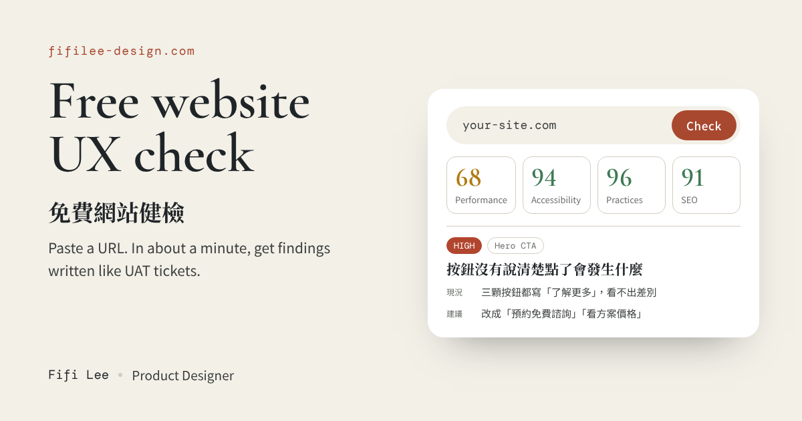

背景與問題
很多店家和中小企業的網站，用的是模板或外包製作，速度、無障礙、表單設計常有問題，但他們自己看不出來，也不知道從哪裡改起。
我的角色
獨立完成，從定義問題、設計到開發上線都由我負責。
關鍵設計決策
- 只要輸入網址、不用登入：降低試用門檻。
- 每人每天 3 次：控制成本，也避免被濫用。同一個網址 24 小時內重查會直接用上次的結果，不另外花費。
- 一分鐘內出結果：使用者願意等的時間有限，等待時用三個步驟顯示進度。
- 四個面向加一個專題：檢查速度、無障礙、文案、表單，外加模板網站常見的破綻，例如 icon 混用、沒換掉的範例文字、點了沒反應的連結。
- 報告寫成 UAT 單：建議依影響大小排序，每條標出嚴重度（高／中／低）和位置，再分成「現況、預期、建議」三欄，修改建議寫到可以直接照做，例如直接給改好的文案。報告也會用第一次來的人的角度走一遍首頁，最後另列一區「細節雷達」，收錄用詞不一致、標點混用這類小地方。
怎麼做出來的
使用的工具
- Claude Code：一起寫前後端程式、除錯和安全性檢查。
- Claude Haiku（Anthropic API）：在工具裡依我的口吻產生健檢建議。
- Cloudflare Workers、KV、Turnstile：部署網站與 API、記錄每日次數、擋機器人。
- Google PageSpeed Insights API：取得速度、無障礙與 SEO 分數。
- GitHub：推送後自動部署。
AI 幫了什麼
寫程式、把我檢查網站的習慣轉成程式能抓的規則（例如 icon 混用、預設 favicon、中文網站留著英文按鈕），以及撰寫讓 AI 用我的口吻、照 UAT 單格式回覆的提示詞。
AI 哪裡出錯、我怎麼抓到並修正
問題
拿自己的作品集實測，6 條建議裡有 4 條是誤判，例如把中英雙語版本當成重複文字、說首頁沒有聯絡入口。
修正對照原始碼發現，工具讀到的是 JavaScript 執行前的 HTML。我補上規則：樣板變數、雙語版本和程式產生的按鈕，不能直接當成錯誤。
問題
建議常常寫到一半就斷掉，畫面只顯示錯誤。
修正查出模型預設會先「思考」，思考吃掉了輸出額度。關掉思考後，報告能完整產出，每次的成本也降低了。
問題
一次改版後，網址輸入框的樣式整個跑掉，是我實際操作時看出來的。
修正原因是程式改了欄位類型，樣式還綁在舊的類型上。改成直接指定這個欄位，之後再改類型也不會壞。
成果
已上線，任何人都可以免費試用。
試用工具 ↗反思
AI 寫程式很快，但它讀到的網站跟使用者看到的不一樣。6 條建議裡有 4 條誤判，讓我更確定：判斷什麼才是真正的問題，還是設計師的工作。
Contact|
想聊聊這個工具？
歡迎來信，或在 LinkedIn 找我。